Zo werkt de planner
Hier maak je elke week het schema voor Hechtel A en B: wie er speelt, wie de was en de broodjes doet en wanneer iedereen er moet zijn. De matchen uit de RBFA-kalender staan er al in.
- Open de plannerJe ziet meteen de eerstvolgende speeldag.
- Kijk de selectie naHaal wie er niet is eruit met het kruisje.
- Bevestig de wasNeem het voorstel over of kies iemand anders.
- Deel het schemaExporteer en stuur het naar de WhatsApp-groep.
Inloggen
Je hebt geen wachtwoord nodig. De planner stuurt een link naar je mailbox.
- 1Vul je e-mailadres in.
- 2Tik op Stuur link. Open de mail van "Hechtel U11 Planner" en tik op de link. Op dat toestel blijf je daarna ingelogd.
- 3Het vraagteken bovenaan brengt je altijd terug naar deze handleiding.
iPhone: open de planner in Safari, tik op het deelicoon en kies "Zet op beginscherm".
Android: tik in Chrome op de drie puntjes en kies "Toevoegen aan startscherm".
Geen mail gekregen? Kijk bij spam. Krijg je "Nog geen toegang", vraag dan de beheerder om je e-mailadres toe te voegen.
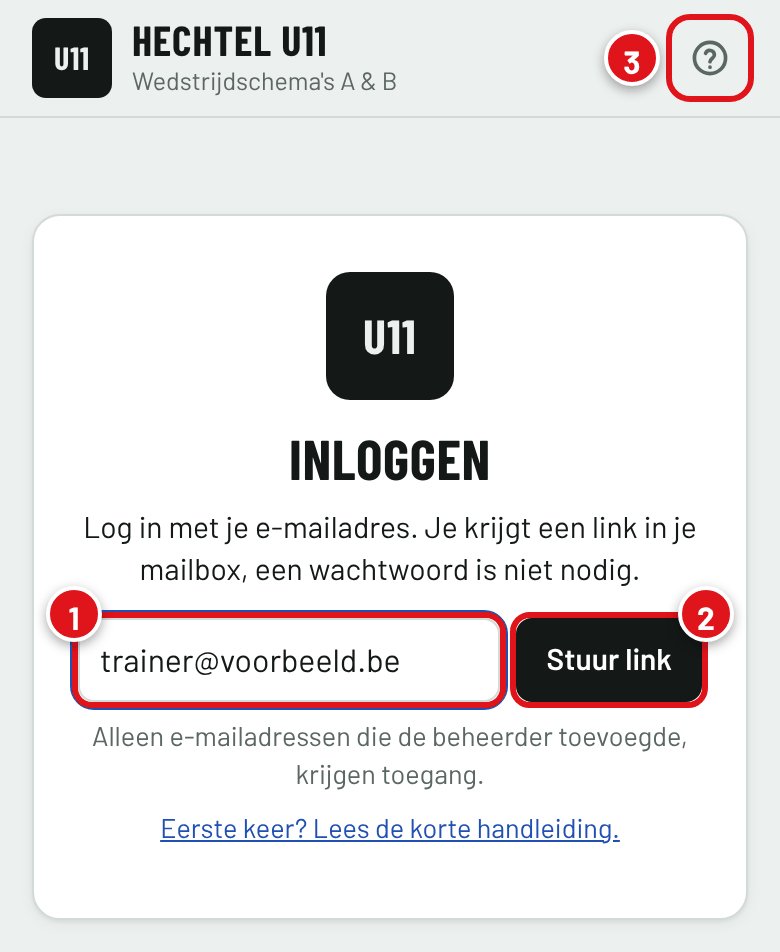
De speeldag
Per match zie je een kaart met de tegenstander, het verzameluur, de selectie en wie de was doet.
- 1De speeldag van deze week. Met de pijltjes ga je naar de vorige of volgende week.
- 2Exporteer maakt het schema als afbeelding of PDF.
- 3Het verzameluur. Thuis is dat 09:00 in de kleedkamer. Op verplaatsing is het vertrek aan de parking: aftrap min 1 uur min de rijtijd.
- 4De status van de match: gepland, geannuleerd of verplaatst.
- 5Deze handleiding.
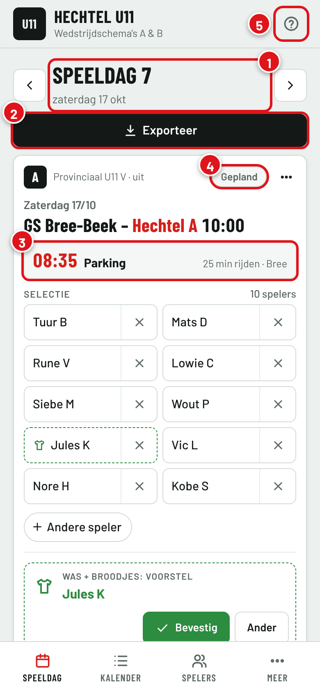
Selectie aanpassen
Elke match start met de vaste spelers van de ploeg. Je past alleen aan wat anders is.
- 1Tik op het kruisje om een speler uit de selectie te halen, bijvoorbeeld als hij ziek is.
- 2Wie niet geselecteerd is, staat eronder. Tik erop om die speler terug te zetten.
- 3Andere speler: iemand van de andere ploeg of een gastspeler laten meespelen. Het getal naast een naam is hoe vaak die speler dit seizoen al meespeelde met de andere ploeg.
- 4Per ongeluk getikt? Tik op Ongedaan maken.
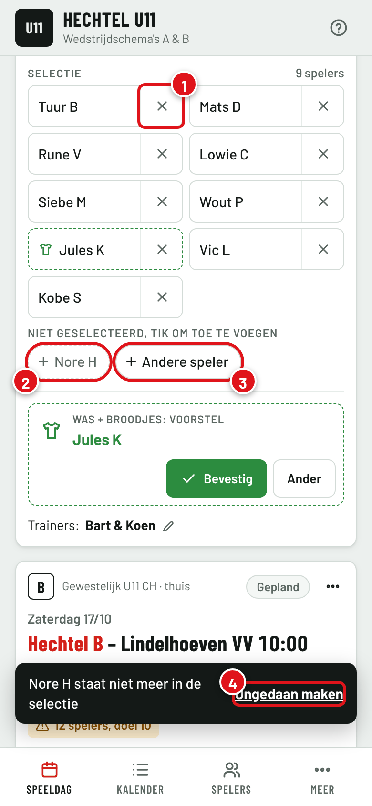
Was + broodjes
De planner stelt per match iemand voor: de speler die het dit seizoen het minst deed. Een voorstel herken je aan de stippellijn.
- 1Tik op Bevestig om het voorstel over te nemen.
- 2Tik op Ander om zelf iemand te kiezen. In de lijst zie je hoe vaak elke speler het dit seizoen al deed.
Exporteer je het schema zonder te bevestigen, dan legt de planner het voorstel vast. Wie de was doet, staat in het groen op het schema.
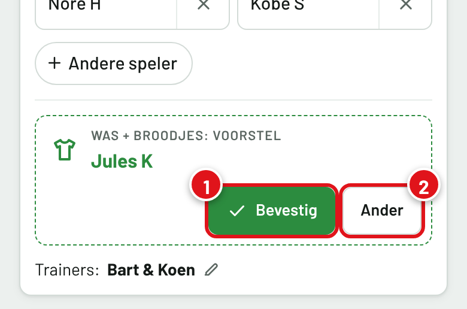
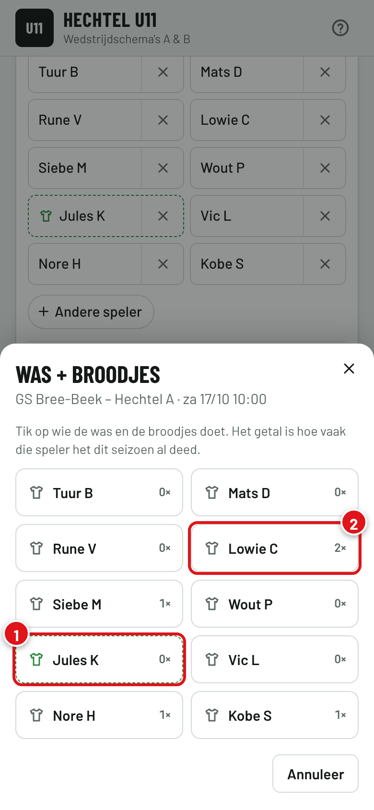
Verzamelen en notitie
Tik op het verzameluur van een match. Bovenaan zie je hoe het standaarduur berekend is.
- 1Vul een ander uur in als je vroeger of later afspreekt. Ook de plaats kan je aanpassen.
- 2Een notitie komt mee op het schema, bijvoorbeeld "Witte kousen meebrengen".
- 3Tik op Opslaan. Met "Standaard herstellen" ga je terug naar het berekende uur.
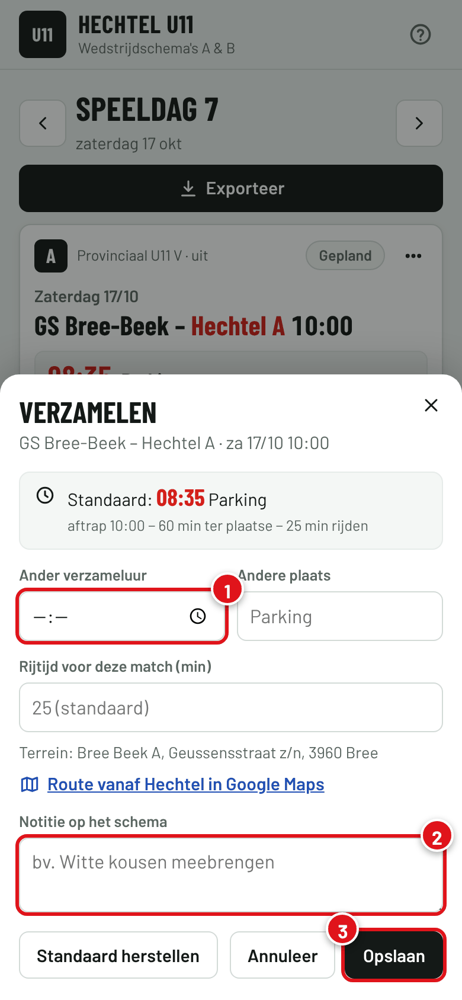
Afgelast of verplaatst
Tik op de status van de match (standaard "Gepland").
- 1Kies Geannuleerd of Verplaatst. Een geannuleerde match komt doorstreept op het schema.
- 2Bij verplaatst vul je de nieuwe datum en het aftrapuur in. De match verhuist mee naar die week.
Verplaatst de RBFA een match, dan past de planner dat zelf aan. Je ziet dan een blauwe melding op de kaart.
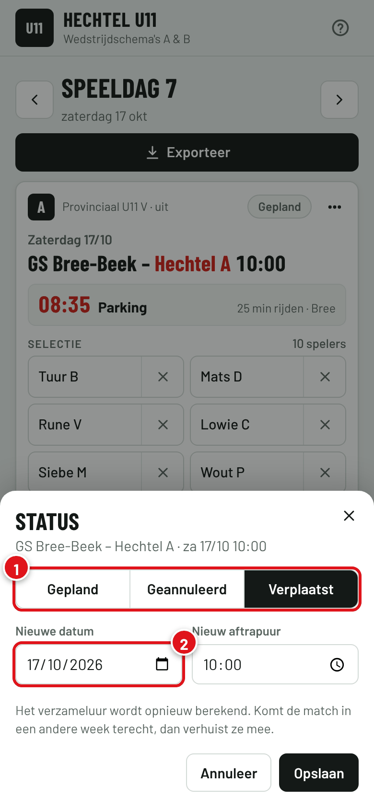
Exporteren en delen
Tik op Exporteer bij de speeldag. Je ziet meteen een voorbeeld van het schema.
- 1Vink aan welke matchen op het schema komen.
- 2Delen opent WhatsApp en je andere apps. Kies de groep en verstuur.
- 3Of download een JPEG of PDF, bijvoorbeeld op de computer.
Pas je na het delen nog iets aan, dan meldt de planner Gewijzigd na de export. Deel het schema dan opnieuw.
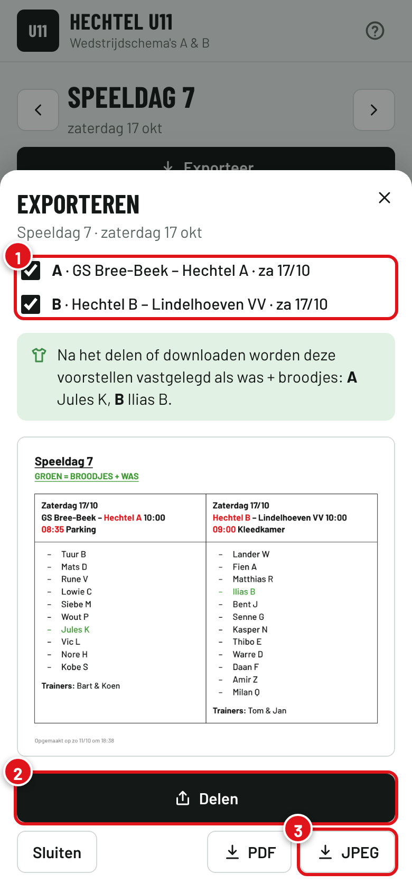
Vooruit plannen
In de Kalender staan alle weken onder elkaar, met het verzameluur, wie de was doet en het aantal spelers. Tik op een match om naar die week te gaan.
- 1Vink een of meer speeldagen aan.
- 2Tik op Exporteer. Je krijgt één afbeelding per speeldag, of één PDF met een pagina per speeldag.
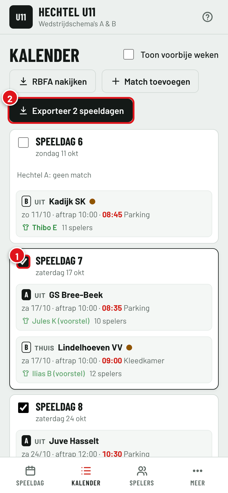
Spelers en ploegen
De ploeglijsten zijn het vertrekpunt voor elke nieuwe match.
- 1Kies Hechtel A, Hechtel B of Extern.
- 2Verhuis een speler naar de andere ploeg.
- 3Voeg een nieuwe speler toe: voornaam en de eerste letter van de achternaam.
- 4Het blauwe label, bijvoorbeeld 1× bij B, toont hoe vaak die speler dit seizoen meespeelde met de andere ploeg. Bovenaan de lijst staat het totaal per ploeg. Zo zie je wie al vaak ging helpen.
Tik op een naam om die te wijzigen of op inactief te zetten, bijvoorbeeld bij een blessure. Daar zie je ook op welke dagen de speler bij de andere ploeg meespeelde. Het shirtje toont hoe vaak iemand dit seizoen de was deed.
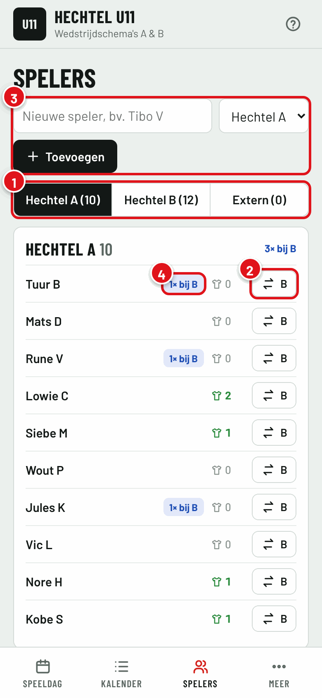
Een extra match
Een oefenmatch, tornooi of inhaalmatch die niet in de RBFA-kalender staat, voeg je zelf toe met Match toevoegen, onderaan de speeldag of in de Kalender.
- 1Kies de tegenstander uit de lijst.
- 2Staat die er niet in, kies dan "+ Nieuwe tegenstander" en vul naam, terrein, adres en rijtijd in.
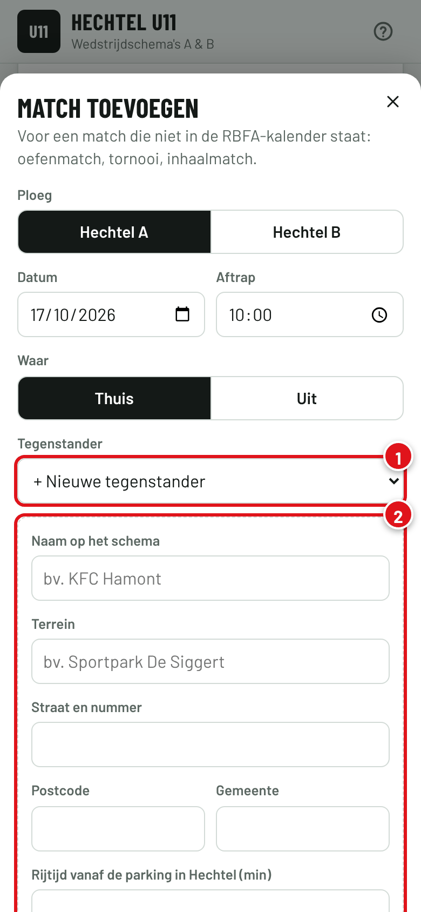
Goed om te weten
- Moet ik de RBFA-kalender zelf bijhouden?
- Nee. Bij het openen kijkt de planner de RBFA-kalender na. Nieuwe en verplaatste matchen, nieuwe tegenstanders en nieuwe spelers komen er vanzelf in. Je ziet dat aan de blauwe melding "RBFA: wijzigingen verwerkt".
- Zien de andere trainers wat ik aanpas?
- Ja, meteen. Iedereen werkt in dezelfde planning.
- Ik krijg geen inlogmail.
- Kijk bij spam. Er kunnen maximaal 5 inloglinks per dag verstuurd worden, probeer het anders de volgende dag opnieuw. Eenmaal ingelogd hoef je dat op dat toestel niet meer te doen.
- Er staat een nieuwe speler bovenaan bij Spelers.
- Die staat nieuw in de RBFA-spelerslijst. Tik op A, B of Extern om te zeggen bij welke ploeg hij of zij hoort.
- Werkt het ook op de computer?
- Ja, in elke browser. Op een groot scherm staan de matchen naast elkaar.